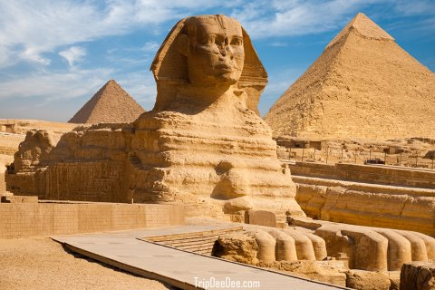

🏜️ อารยธรรมอียิปต์

อารยธรรมอียิปต์โบราณเกิดขึ้นบริเวณลุ่มแม่น้ำไนล์ ซึ่งเป็นแหล่งน้ำสำคัญที่ทำให้พื้นที่โดยรอบเหมาะสมต่อการเพาะปลูก ชาวอียิปต์สามารถสร้างสังคมที่มีความเจริญและพัฒนาอาณาจักรขึ้นมาได้อย่างมั่นคง
ชาวอียิปต์มีความเชื่อเกี่ยวกับชีวิตหลังความตาย จึงมีการทำมัมมี่และสร้างสุสานขนาดใหญ่ โดยเฉพาะพีระมิดซึ่งเป็นสิ่งก่อสร้างที่มีชื่อเสียง และแสดงให้เห็นถึงความสามารถทางวิศวกรรมและการจัดการแรงงาน
อียิปต์ยังมีความก้าวหน้าด้านการเขียนอักษรเฮียโรกลิฟิก คณิตศาสตร์ การแพทย์ ดาราศาสตร์ และสถาปัตยกรรม ฟาโรห์ถือเป็นผู้ปกครองสูงสุดและมีบทบาทสำคัญทั้งทางการเมือง และด้านศาสนา